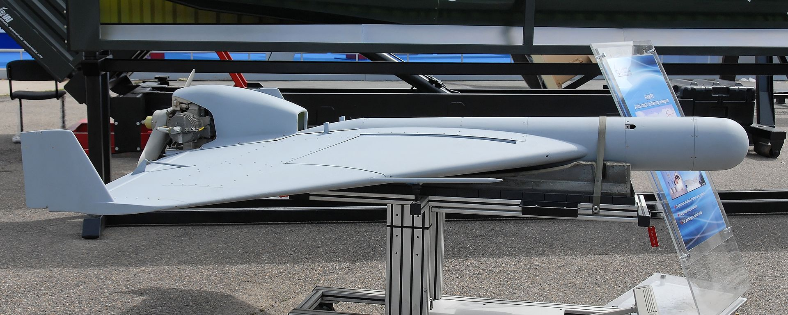

Представляет собой самонаводящийся самолёт-снаряд. После обнаружения сигналов РЛС он определяет местоположение цели, пикирует на неё и поражает осколочно-фугасной боевой частью. Запускается с мобильной пусковой установки контейнерного типа при помощи твердотопливных стартовых ускорителей. Первый полет состоялся в 1989 году.
Предназначен для борьбы с РЛС противника. Выходит в заданный район патрулирования. Барражирует в заданном районе. В случае обнаружения источника радиолокационного излучения поражает ее. Действия в случае отсутствия РЛС - предположительно, выход в заданный район и совершение посадки с помощью парашюта. Может применяться в любое время суток.
Превосходством БПЛА перед пилотируемыми воздушными судами является, прежде всего, стоимость производства работ, а также значительное уменьшение количества регламентных операций. Само отсутствие человека на борту самолета значительно упрощает подготовительные мероприятия для проведения аэрофотосъемочных работ.
Во-первых, не нужен аэродром, даже самый примитивный. Беспилотные летательные аппараты запускаются или с руки, или с помощью специального взлетного устройства — катапульты.
Во-вторых, особенно при использовании электрической двигательной схемы, отсутствует необходимость в квалифицированной технической помощи для обслуживания летательного аппарата, не так сложны мероприятия по обеспечению безопасности на объекте работ.
В-третьих, отсутствует или намного увеличен межрегламентный период эксплуатации БПЛА по сравнению с пилотируемым воздушным судном.
| Длина (м) | 2,26 |
| Размах крыльев (м) | 3,1 |
| Высота (м) | 0,74 |
| Максимальная взлётная масса (кг) | 35 |
| Крейсерская скорость полёта (км\ч) | 90 |
| Максимальная скорость полёта (км\ч) | 120 |
| Максимальная дальность полёта (км) | 100 |
| Максимальная высота полёта (м) | 6500 |
| Тип авиадвигателя | поршневой |